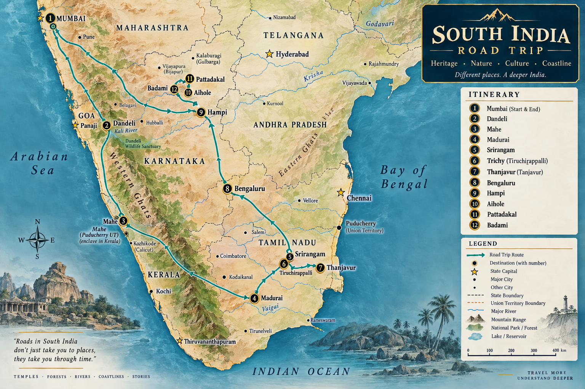

From India's western coast to the heart of its southern heritage.
The route connects very different landscapes and histories: Mumbai's great port city, Dandeli's forests and Kali River, the unusual French enclave of Mahe, ancient Madurai, Chola-era Thanjavur, Bengaluru's garden-city character and the monumental ruins of Hampi. The map is geographic context; use live navigation for the actual road.

Before you goPractical checks for October 2026
How to read this road trip
Fourteen days, a changing landscape and more than a thousand years of South Indian history — this is the context worth carrying with you before the first kilometre.
This is not a trip through one version of India. It is a journey across several physical and cultural zones that happen to connect by road. You begin on the Arabian Sea in Mumbai, cross the Western Ghats into the forests of Karnataka, touch the Malabar coast at Mahe, then move into the temple-rich plains of Tamil Nadu. From there the route turns north into the Deccan, reaches the granite landscape of Hampi, and then follows the Malaprabha valley through Aihole, Pattadakal and Badami before the long return to Mumbai.
The most useful way to understand the itinerary is as three overlapping stories: landscape, power and architecture. The landscape changes first. The architecture then tells you what different societies chose to build in those landscapes. Finally, the political history explains why particular places became important enough to receive extraordinary investment.
1. Start with the map, not the monuments
Mumbai is a coastal city whose modern form was made partly by joining islands. The sea was not scenery; it was the reason the settlement mattered. A harbour creates opportunities for fishing, trade and military control. Later, colonial infrastructure, shipping, railways and industry turned Bombay into one of the major urban centres of the subcontinent. When you stand at the Gateway of India, therefore, you are looking at a monument positioned at a threshold: land behind you, harbour in front of you, and a city built around movement between the two.
CSMT adds a different piece of the same story. UNESCO describes the station as a major example of Victorian Gothic Revival architecture combined with Indian architectural traditions. It was designed by F. W. Stevens, construction began in 1878, and the building took about a decade to complete. The important point is not merely that it is ornate. A railway station is infrastructure. Its architecture represents the confidence and ambition of a city being connected to a much larger hinterland.
Then the trip changes character completely. Dandeli sits in the forested Western Ghats around the Kali River. Here the interesting structures are not palaces or temples but ecological systems: river, forest, canopy, rock, rainfall and wildlife. The destination is a useful reset because it forces you to change how you look. In Mumbai you read streets and buildings; in Dandeli you should read habitat, water and sound.
That contrast matters. The Western Ghats are not simply a scenic mountain range between destinations. They form one of the great ecological regions of the Indian peninsula, and the road across them marks a real change in climate, vegetation and human geography. Dandeli is where the trip's natural-history story becomes visible.
2. Mahe: a small place with a complicated map
Mahe is geographically tiny but historically unusual. It is a former French enclave of the Union Territory of Puducherry on the Malabar Coast, surrounded by Kerala. Kerala Tourism records a French presence from 1721 and a later Fort Mahe completed in 1769. The French interest was tied to the commercial and strategic importance of the Malabar coast, especially its pepper trade.
Do not expect Mahe to look like a miniature French city. That would be the wrong mental model. Its French political history exists inside a much larger Malayalam-speaking coastal culture. The interesting experience is precisely the mismatch between the map and the everyday environment: a Union Territory enclave embedded in Kerala, with French colonial history, Catholic heritage, Malabar food and an Indian coastal landscape.
That idea — political boundaries layered over older cultural geography — will recur throughout the trip. South India was never culturally uniform, and its kingdoms, languages, religious institutions and trading networks overlapped in complicated ways.
3. Madurai and the idea of the living temple city
By the time you reach Madurai, the roadbook moves from natural landscape to sacred urbanism. The Meenakshi Sundareswarar Temple is not an isolated monument dropped into a modern city. The Madurai district administration describes the temple as the pivot around which the city evolved, and the present complex is the product of additions and expansions over many periods, with major Nayak-era expansion under Thirumalai Nayak in the seventeenth century.
This is your first major lesson in South Indian temple architecture. The huge gopurams are gateway towers. The vimana is the superstructure over a sanctum in the Dravidian vocabulary. A mandapa is a pillared hall. The garbhagriha is the innermost sacred chamber. Once those words become familiar, the temples stop looking like enormous collections of decoration and start becoming organized architectural systems.
Madurai is also a lesson in the difference between history and tradition. The city has a long historical record and extensive archaeological and literary associations, but it also has powerful religious narratives about Shiva, Meenakshi and the city's sacred origins. Both belong in the cultural story. They should not, however, be presented as the same kind of evidence. Throughout this guide, documented chronology and religious tradition are kept distinct where the distinction matters.
4. Srirangam and Trichy: river, pilgrimage and strategic geography
The next part of the journey is one of the most interesting because Srirangam and Trichy make sense together. Srirangam is a river-island town between the Kaveri and Kollidam branches. The Ranganathaswamy Temple is a major Vaishnavite pilgrimage centre with seven enclosures and a city-scale footprint. The architecture is organized as a sequence of thresholds: gateway, enclosure, street, shrine, hall and deeper sacred space.
Think about what a large temple requires to function. It needs priests, pilgrims, food, water, markets, craft production, accommodation, processions and rules for movement. That means a major temple is also an urban institution. Srirangam lets you see that relationship unusually clearly because the surrounding town and temple complex remain closely intertwined.
Trichy changes the perspective again. The Rock Fort rises from an ancient granite outcrop above the surrounding plain. The rock is geological evidence; the temples and fortifications are historical evidence; the view is strategic evidence. From the height, the Kaveri-region plain and Srirangam become part of the same picture. Trichy therefore gives you a physical demonstration of why river corridors, fertile plains and defensible high ground mattered to successive political powers.
Do not overcomplicate the transfer day. Srirangam is the place to understand sacred urbanism. Trichy is the place to understand geology, strategic geography and the layers of dynastic and colonial competition. Then continue to Thanjavur.
5. Thanjavur: when architecture becomes evidence of state power
Brihadisvara Temple at Thanjavur is one of the clearest places on the entire journey where architecture and political power can be read together. UNESCO places it within the Great Living Chola Temples, alongside the temples at Gangaikondacholapuram and Darasuram. Construction of the Thanjavur temple was inaugurated around 1003–1004 CE under Rajaraja I and consecrated around 1009–1010 CE. UNESCO gives the main vimana a height of 59.82 metres.
Those dates matter because they make the building more than an anonymous ancient monument. You can place it in the reign of a specific ruler and a documented period of Chola expansion and state formation. The temple's inscriptions, sculpture, murals and architectural organization provide evidence about the institutions and artistic systems that supported it.
Look carefully at the difference between monumental scale and human scale. From a distance the vimana dominates everything. Up close, inscriptions, carved figures, doorways and surface details return you to the scale of individual craftsmen and worshippers. The genius of the building is partly the way it controls both scales at once.
Thanjavur also introduces an important idea that continues through the rest of the trip: these are not dead monuments. UNESCO describes the Great Living Chola Temples as living temples where traditions of worship continue. You are visiting heritage, but you are also entering places that still have religious meaning and contemporary users.
6. Bengaluru: a deliberate modern interruption
Bengaluru is useful because it prevents the journey from becoming a continuous march through medieval architecture. Bangalore Palace represents princely India and late nineteenth-century architectural borrowing. Karnataka Tourism describes its Tudor and Scottish Gothic influences and traces the palace's construction to 1878, followed by its acquisition and expansion under the Wadiyar dynasty.
Cubbon Park and Lalbagh tell a different story: planned green space, horticulture and the changing urban idea of Bengaluru. Cubbon Park covers roughly 300 acres in the centre of the city; Lalbagh is a historic botanical garden with roots in the eighteenth century. These places show that urban history is not only about buildings. Gardens, public institutions and planned open space can reveal just as much about how a city imagined itself.
Then there is contemporary Bengaluru: technology, migration, restaurants, cafés, traffic and a huge modern metropolitan economy. You do not need to force a neat connection between the medieval sites later in the trip and the modern city. The value of Bengaluru is the contrast. It demonstrates how quickly urban identity can change while older layers remain embedded in the landscape.
7. Hampi: a capital turned landscape
Hampi is where the trip's scale expands dramatically. UNESCO describes the Group of Monuments at Hampi as the remains of the capital of the Vijayanagara Empire, flourishing from the fourteenth to sixteenth centuries. More than 1,600 surviving remains are identified across sacred, royal, civil, military and hydraulic systems.
That last word — systems — is crucial. Hampi is not simply a collection of beautiful ruins. It contains temples, markets, water infrastructure, roads, fortifications, royal spaces, agricultural systems and evidence of a large urban society integrated into an extraordinary boulder-strewn landscape. The Tungabhadra River and granite hills are not a backdrop to the city; they are part of the city's logic.
The Vittala complex is often reduced to the Stone Chariot. Resist that. UNESCO calls the Vittala complex the culmination of Vijayanagara temple architecture and describes its associated halls, gateways, water structures and ceremonial spaces. The chariot is one component of a much larger architectural and ritual environment.
The same applies to the Queen's Bath and Elephant Stables. UNESCO notes Indo-Islamic architectural elements in secular buildings, evidence of a multi-religious and multi-ethnic society. That is important because it complicates the easy modern story of a city defined by a single religious or cultural identity. Vijayanagara was a major imperial capital operating in a connected Deccan world.
Then comes 1565 and the Battle of Talikota. UNESCO records massive destruction after the city was conquered by a Deccan confederacy and describes the subsequent abandonment of Hampi. The ruins are therefore not simply a record of prosperity. They also preserve the physical consequences of political collapse.
8. Aihole, Pattadakal and Badami: watch an architectural tradition develop
The final heritage arc is perhaps the most intellectually rewarding part of the trip. Aihole, Pattadakal and Badami belong to the Early Chalukyan world of the sixth to eighth centuries. UNESCO's architectural study presents them as connected stages in the development of Hindu cave and temple architecture in the Malaprabha River valley.
Aihole is the laboratory. Karnataka Tourism lists more than 125 temples spanning a long period, and the surviving buildings show many different approaches to temple form. The Durga Temple's apsidal plan, the Lad Khan Temple's unusual early structural form, the Ravana Phadi cave and the Meguti Jain Temple are valuable precisely because they are not identical. You are seeing experimentation rather than a finished textbook style.
Pattadakal is the synthesis. UNESCO describes it as the high point of an eclectic art under the Chalukyas, combining architectural forms associated with northern and southern India. The site includes nine Hindu temples and a Jain sanctuary. The Virupaksha Temple, built around 740 by Queen Lokamahadevi to commemorate her husband's victory, is particularly important because it connects architecture, patronage and political memory.
Badami is the capital landscape and the rock-cut answer. Historically known as Vatapi, Badami was the Chalukyan capital. Its sandstone cliffs contain four principal rock-cut caves: three Hindu and one Jain. Here the building is excavated from the cliff rather than assembled from structural blocks. That makes geology part of the architecture. Agastya Lake and the Bhutanatha temples then show how the rock-cut monuments sit within a wider urban and sacred landscape.
Carry one question through all three sites: what changes? At Aihole, watch the experiments. At Pattadakal, watch different architectural vocabularies become confident, coherent monuments. At Badami, watch the same artistic world operate inside excavated rock and a capital landscape. This comparison is far more valuable than memorizing a list of temple names.
9. The cultural thread running through the whole journey
The route crosses multiple languages, religious traditions, political histories and food cultures. Marathi and the many communities of Mumbai give way to Kannada-speaking Karnataka, then to Malayalam-influenced Malabar, Tamil Nadu's Tamil cultural world, and back into the Kannada-speaking Deccan. Hindu traditions dominate many of the heritage sites, but the built record also preserves Jain, Christian, Islamic and colonial layers.
The point is not to flatten these differences into a single story of 'Indian culture.' The more interesting story is interaction. Trade moves ideas. Rivers move people and goods. Kingdoms compete and borrow. Craftsmen carry techniques. Religious institutions commission architecture. Colonial powers establish enclaves inside older trading worlds. Modern cities build over earlier ones. The result is not a clean sequence of eras but overlapping layers.
Food makes this visible at street level. Mumbai's food culture reflects migration and trade. Malabar cooking carries the geography of the coast and its commercial history. Tamil food in Madurai, Srirangam and Thanjavur reflects rice agriculture, temple traditions and regional tastes. North Karnataka cooking becomes noticeably different around Aihole, Pattadakal and Badami. You are not required to become a food historian; simply notice that the plate changes as the landscape changes.
10. The architectural lesson to carry with you
By the end of the trip, you will have seen at least four different ways of making monumental architecture: rock-cut spaces at Elephanta and Badami; Dravidian structural temples at Madurai and Thanjavur; Vijayanagara imperial architecture at Hampi; and the experimental/synthetic Chalukyan tradition across Aihole and Pattadakal. Mumbai adds a different lesson: colonial architecture could combine European forms with Indian materials, craftsmen and climatic responses.
When you arrive at a monument, ask four questions. What is the building made from? How does it organize movement? Who paid for it and why? What is still happening here today? Those four questions will take you further than memorizing construction dates.
11. The natural lesson
The trip also moves through a remarkable sequence of landscapes: Arabian Sea waterfront, Western Ghats forest, Malabar coast, Kaveri river country, the dry Deccan, the Tungabhadra basin and the sandstone cliffs of the Malaprabha valley. The natural setting repeatedly affects the architecture. Elephanta is excavated from an island hill. Hampi's granite and river shaped its city. Badami's cliffs became caves. Srirangam's island geography helped define the temple city. Thanjavur's monumental Chola centre belongs to the fertile Cauvery delta.
So when a landscape looks like scenery, ask whether it is actually infrastructure, defence, agriculture, sacred geography or building material. Often it is several of these at once.
12. How to travel this route well
Do not try to win the itinerary. The schedule has a few deliberately dense days, particularly 23 October and 28 October. On those days, prioritize the principal experience and accept that you will leave things unseen. A heritage site is not improved by arriving exhausted and spending ten minutes photographing the entrance before rushing away.
Use the deep dives before the relevant day, not only after it. Use the walking tours as suggested sequences, not commandments. Use the photo galleries to recognize what you are looking at. Use the architecture decoder when a temple suddenly presents you with unfamiliar vocabulary. And use the reality checks when the guide says that something depends on weather, access, water levels or local conditions.
Most importantly, keep the distinction between what we know and what people believe. UNESCO, government departments, inscriptions and archaeological evidence can establish certain facts. Religious traditions, legends and local stories are culturally important even when they cannot be demonstrated in the same way. A good travel experience does not require choosing one and dismissing the other. It requires knowing which kind of story you are hearing.
The journey in one sentence
You are travelling from a modern Indian port city, through forest and coastal cultures, into the living temple world of Tamil Nadu, and then north into the Deccan landscapes where Chalukyan experimentation and Vijayanagara imperial architecture reveal how Indian builders repeatedly adapted ideas to new political, religious and geographical worlds.
That is the thread to carry onto the road. Everything else — the monuments, meals, photographs, viewpoints, long drives and unexpected detours — will make more sense once you have it.
The roadbook
Day · date · distance · what is happening · road realityDistances are approximate road distances and will vary with the exact route, traffic and road conditions. Use live navigation on the day.
Architecture decoder 9 terms · diagrams
Use the diagrams as a field vocabulary. Exact forms vary by region and period, but these distinctions are useful across this route.
Food what to eat · where to eat
Use the food list as a shortlist, not a mandate. Ratings are current snapshots; hours, menus and review counts can change.
What to eat / try
Where to eat
Know before you go
Every stop · photos · priorities · walking tour · deep readingEach destination is a chapter. Photos are here as a visual preview; the ranked Top 5 shows what deserves the time, the walking tour gives you a practical sequence, and the deep reading provides the historical context. Current access, weather and road conditions still need live verification close to the trip.
This page uses reputable tourism and heritage sources for the destination summaries. The route is shown geographically for orientation; actual driving routes and conditions should be checked with live navigation. Roadbook distances are approximate. Activity recommendations are editorial suggestions, not live availability or opening-hour guarantees.
- Wikimedia Commons — India location map
- Maharashtra Tourism — Mumbai City
- UNESCO — Chhatrapati Shivaji Terminus
- UNESCO — Elephanta Caves
- Karnataka Tourism — Dandeli
- Karnataka Tourism — Dandeli rafting
- Kerala Tourism — Mahe
- Incredible India — Brihadeeswarar Temple
- Karnataka Tourism — Bengaluru attractions
- Karnataka Tourism — Bangalore Palace
- Karnataka Tourism — Cubbon Park
- Madurai District — Meenakshi Sundareswarar Temple
- Incredible India — Srirangam Ranganathaswamy Temple
- Karnataka Tourism — Aihole
- Karnataka Tourism — Pattadakal
- Karnataka Tourism — Badami
- UNESCO — Pattadakal
- Karnataka Tourism — Hampi
- UNESCO — Great Living Chola Temples
- Tiruchirappalli District — Rock Fort
- Tiruchirappalli District — History
- Srirangam Temple — Official History
- UNESCO — Evolution of Temple Architecture: Aihole–Badami–Pattadakal